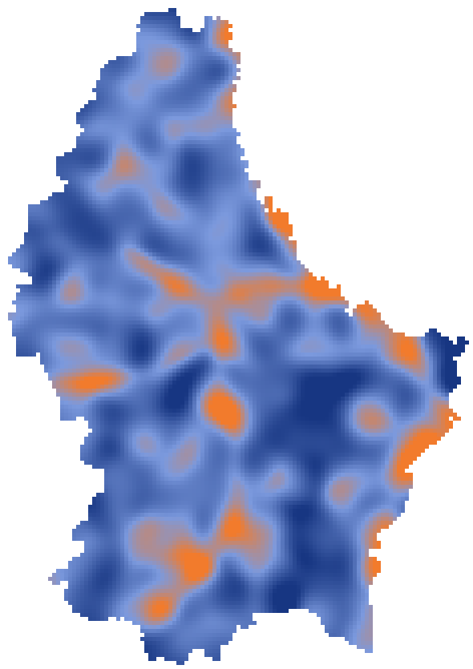
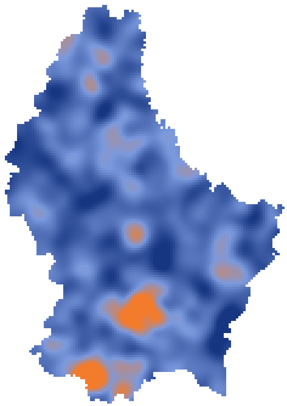

Read this first
- Everything is fictitious. The places are real (the commune boundaries are the official ones), the numbers are not. They are shaped loosely by real geography, so they look plausible: do not draw any conclusion about a real place from them.
- Aggregated only. No address, no household, no vehicle, no insurance policy, no claim record, no personal data. A claim indicator is an index (100 = national mean) over many homes or many kilometres; on the grid it is a smoothed mean over about 2 km² around the cell, shown only where that window holds at least 30 insured homes.
- No public data here. Weather, flood zones, terrain, roads, fire stations, accidents: take them directly from the real sources (data.public.lu, geoportail.lu, MeteoLux…), which are real and up to date. To cross the two, use the coordinates (grid cells, road segments), the commune or the canton.
The files
| File | Rows | One row is |
|---|---|---|
grid_500m.csv | about 10,600 | a 500 m cell of the country (a heatmap) |
homes_by_commune.csv | 101 | the insured homes of a commune |
road_segments.csv | 232 | 1 km of a main road |
communes.geojson | 101 | the commune boundaries, to draw and join (official, public domain) |
homes_by_canton.csv | 12 | the insured homes of a canton |
mozaik_options_by_canton.csv | 96 | one Mozaïk option in one canton |
vehicles_by_canton.csv | 12 | the insured vehicles of a canton |
commutes_between_cantons.csv | about 140 | the commuters going from one canton to another |
new_homes_by_life_moment.csv | 60 | the new home contracts of a year in one canton, for one life moment |
heatmap_water_damage_index.png and heatmap_burglary_index.png show two of the grid fields at a glance. Cells add up to communes, communes add up to cantons.


The columns
grid_500m.csv
Download · 804 KB| Column | Meaning |
|---|---|
cell_id | the cell, row and column of a regular grid (about 500 m by 500 m) |
lat, lon | the centre of the cell (WGS 84) |
commune, canton | where the cell lies |
insured_homes | insured homes in the cell |
homes_in_window | insured homes in the smoothing window around the cell |
water_damage_index, storm_hail_index, burglary_index | how often homes around here claim for water damage, storm or hail, burglary, relative to the national mean (100); smoothed; empty where the window is too thin |
share_with_cellar | share of insured homes with a cellar, smoothed |
share_natural_catastrophes_option | share of insured homes that chose the Mozaïk natural catastrophes option, smoothed |
homes_by_commune.csv
Download · 6 KB| Column | Meaning |
|---|---|
commune, canton | the commune (official boundaries, Grosbous and Wahl merged into Groussbus-Wal in 2023), its canton |
insured_homes, area_km2 | insured homes, area |
| the indicators of the grid | the same, as a mean over the commune weighted by its homes |
road_segments.csv
Download · 23 KB| Column | Meaning |
|---|---|
segment_id, road, road_type | the segment (A7-012 is the 12th km of the A7), the road, motorway or national road |
km_from, km_to | where the segment starts and ends along the road |
start_lat, start_lon, end_lat, end_lon | its ends (WGS 84). The line is drawn roughly through the towns: snap it to the real road network (OpenStreetMap) when you need precision |
commune | the commune at the middle of the segment |
motor_claim_index | how often insured vehicles claim on this segment per kilometre driven, relative to the national mean (100) |
share_wildlife_collisions, share_ice_or_snow, share_rear_end_in_traffic, share_at_night | among those claims, the share with wildlife, on ice or snow, rear-end in traffic, at night |
homes_by_canton.csv
Download · 1 KB| Column | Meaning |
|---|---|
canton | one of the 12 cantons of Luxembourg |
insured_homes | number of insured homes |
share_flats, share_owner_occupied | share of flats; share lived in by their owner |
median_year_built | median construction year |
share_with_cellar | share with a cellar or basement |
share_with_solar_panels, share_with_alarm, share_with_leak_detector, share_with_non_return_valve | declared equipment |
share_high_value_contents | share with high-value contents |
mozaik_options_by_canton.csv
Download · 3 KB| Column | Meaning |
|---|---|
canton | the canton |
mozaik_option | natural_catastrophes, theft_vandalism, valuables_collections, technological_goods, nomadic_goods, eco_energies, private_liability, legal_protection |
share_of_homes_with_option | share of insured homes that chose this option |
Mozaïk is Foyer's modular home insurance: a base of covers, and options each person composes. What each option covers is in the Mozaïk general conditions.
vehicles_by_canton.csv
Download · 1 KB| Column | Meaning |
|---|---|
canton, insured_vehicles | the canton, number of insured vehicles |
share_suv, share_electric_or_hybrid | vehicle mix |
median_vehicle_age_years | median age |
share_parked_outside | share parked in the street or a driveway rather than a garage |
mean_annual_km | mean distance driven per year |
commutes_between_cantons.csv
Download · 5 KB| Column | Meaning |
|---|---|
home_canton, work_canton | where people live, where they work |
commuters | number of commuters on this flow |
median_distance_km | median one-way distance |
share_leaving_before_7am | share who leave before 7:00 |
share_km_on_forest_roads | share of the distance driven along forests |
new_homes_by_life_moment.csv
Download · 6 KBTo step into someone's shoes: the people behind a subscription, by the moment of life that brought them. Where a canton counts fewer than 30 new contracts for a moment, only the count is shown.
| Column | Meaning |
|---|---|
canton, life_moment | the canton; buying_a_home, first_home_alone, arrived_in_luxembourg, moving_within_luxembourg, new_family |
new_home_contracts | new home insurance contracts over a year, rounded to 10 |
share_flats, share_tenants | share of flats; share of tenants |
median_age_band | the median age band of the people subscribing |
share_subscribed_online, share_subscribed_with_agent, share_subscribed_with_bank_partner | the channel that concluded the contract (they add up to 1) |
share_online_journeys_abandoned | among the online journeys started, the share left before the end |
median_days_moving_in_to_subscription | median days between moving in and the contract |
share_with_theft_option, share_with_natural_catastrophes_option | two Mozaïk options, chosen at subscription |
share_journey_language_fr, _de, _en, _lb, _pt | the language the journey was done in (they add up to 1) |
The public data, real, to take from the source
Every address in the country is geocoded and public (ACT), and so is the cadastral parcel it sits on (PCN): cross the zones with the whole plot, not only the address point. Around it: flood and flash-flood maps, past flood events and water levels (AGE); terrain and LiDAR (ACT); land cover (LIS-L); weather warnings and records (MeteoLux); weather stations (ASTA); fire and rescue centres (CGDIS); SEVESO sites; traffic counts and roadworks; road accidents by canton (STATEC); OpenStreetMap; Copernicus. For the life moments: population by nationality and age by commune (RNPP), migrations and the 2021 census (STATEC), sale prices and rents by commune (Observatoire de l'Habitat). Most are on data.public.lu; check each dataset's licence on its page.